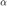

Description of Parameters for Tracking via Optical Flow algorithm
Contents
Movie Info
- movieName: (String) Keyword to use for referencing movie.
- acquisitionDate: (Datetime) Date of the experiment
File I/O
- inputPathName : (String) Path to input movie file. Absolute (preferred) or relative to the current working directory when running the code.
- inputFileName : (String) Base filename for the movie, with extension.
- outputPathName : (String) Path to dump output files.
- initialMarginMaskFileName : (String, optional) if tracking the wound margin, indicate the base filename for the mask of the wound margin in the first movie frame (with extension, filename relative to inputPathName)
Point Detection
- preprocessImageFunctionName : (String) Name of the MATLAB function that should be used to preprocess movie frames before point detection. Should be in the path. Currently this function is not allowed to take any arguments other than the frame itself.
- detectPointsFunctionName : (String) Name of the MATLAB function that should be used to detect points in the preprocessed movie frame. This can be one of the many feature-detection algorithms in MATLAB (such as detectMinEigenFeatures) or can be a custom function (or a wrapper to another function). If a custom function, it must take in only the image as an argument and return an object that has a Location field containing an N x 2 array of the [x,y] coordinates of the detected points, e.g.:
detectedPointObject = @detectPointsFunctionName(frame); % Detect points % with this function detectedPointCoordinates = detectedPointObject.Location;
Tracking by Optical Flow (Lucas-Kanade Method)
Details of the algorithm and its parameters can be found here: https://www.mathworks.com/help/vision/ref/vision.pointtracker-system-object.html. For more detail into the algorithm itself, as well as the feature detector packaged as detectMinEigenFeatures in MATLAB, see the original article: Shi and Tomasi. (1994). Good Features to Track. IEEE Proc. CVPR94
- trackingMaxBidirectionalError : (uint8) Forward-backward error threshold. Generally 1 or 2 pixels
- trackingBlockSizeVal : (uint32) Neighborhood size to use for tracking. Must be an odd integer, minimum value of 5. Increasing the size of the neighborhood increases computation time but can also increase tracking accuracy. Default is 31 (pixels)
Adding More Points
Over time as points move or stop being tracked you may wish to add more points to track. This is done by looking at the density of points locally in sub-regions (or ROIs) of the image and adding more points in that region if the density is too low. These parameters cover that process.
- nRoisRows, nRoisColumns : (uint32) How many ROIs to split the image up in each direction.
- pointDensityThreshold : (float) Density of points (points per pixel) that is needed to trigger adding more points in a ROI.
It can be helpful to delay a certain number of frames before adding any new points, and then update points at a specified interval of frames thereafter. These paramaters are related to that.
- pointUpdateDelay : (uint32) How many frames to delay before allowing the point update routine to run. Make this larger than the number of frames in the movie to skip adding points.
- pointUpdateInterval : (uint32) Interval at which the algorithm checks whether additional points are needed.
Wound Margin Tracking
Determine whether a wound margin should be tracked or not. The wound margin is defined in the first movie frame by a manually determined mask.
- trackMargin : (Boolean) Whether or not margin tracking should be enabled.
- alphaRadius : (float) In the first frame the wound margin is determined by a manually segmented mask of the wound. In subsequent frames the shape of the wound is described geometrically with an alpha shape. More detail on them can be found at Wikipedia. The important parameter is the radius , described by this parameter: 0 corresponds to no shape at all (distinct points), and Inf is identical to the convex hull. I have found success with a value of 20, though it is extremely empirical.